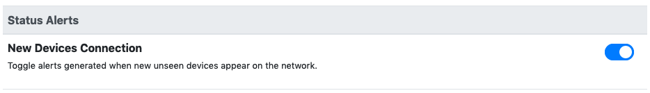
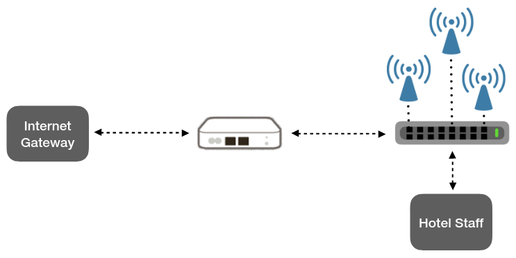

Overview
Securing devices is a challenging task in the current era, affecting large enterprise network as well as small home network. In home networks, there is often any knowledge on the devices connected to the network or how the network bandwidth is being used. On the other end, security in enterprise networks is traditionally demanded to firewall appliances, where it often ends up to the use of static rules targeting some specific devices, which are difficult to manage in a constantly changing network. Moreover, since the BYOD practice is becoming more and more widespread, it is important for the network administrator to know what devices are currently connected to the network and dynamically apply rules to them.
Regardless of the environment, the common requirements for network monitoring are still the same:
Discover and identify, in an accurate way, the devices connected to a network, along with the device type and block/alert new devices connection
Get a visibility on network traffic to see which are the top talkers and how the bandwidth is being used
Throttle/block bandwidth consuming protocols which degrade network performance
Proactively identify possible threats and block the device/communication traffic and notify to the administrator
nEdge is the ntop response to the outlined problems.
Let’s analyze how nEdge works with some use cases.
Small Business
Business environments are characterized by variegated network topologies and appliances. A solution which requires a change in network topology can be expensive and can create conflicts with existing devices.
By deploying nEdge in bridge mode, no topology change is required. Moreover, nEdge does not interfere with other network appliances. It can be deployed in different points of the network to provide visibility and protection on the network segment of choice.

nEdge integration in a small business environment
It is important to note that nEdge is intended to secure the devices at the network edge. It does not replace firewalls, it merely complements them.
Some interesting nEdge features for a network administrator are the ability to generate alerts when new devices connect to the network and to block possibly dangerous protocols like file sharing protocols, SSL traffic with no certificate and VPN tunnels.

To get a full visibility of the network, by enabling Network Discovery it will also be possible to discover and correctly identify idle devices like printers in an accurate way.
Hotel
A medium size hotel usually has many access points that guests can use. The access points are connected to the Internet gateway to provide Internet connectivity.
Usually the same Internet gateway is also being used by the hotel staff, so it can become unresponsive when some guest abuses network bandwidth or when a lot of clients are connected.
The problem can be easily solved by using nEdge in bridge mode as shown in the picture.


nEdge integration in a hotel
The following nEdge configuration will be used:
Captive portal is enabled
The Default bandwidth class guarantees 65% bandwidth
The Slow Pass bandwidth class guarantees 30% bandwidth
A user Staff is created with a Default class set a the fallback policy
A user Guests is created with a Slow Pass class set a the fallback policy
This setup will ensure that the staff will have a reserved 65% bandwidth to use when needed, while still allow guests to run at full bandwidth when the staff is idle.
Moreover, with nEdge the guests bandwidth will be split in a fair way, so that a single guest won’t be able to monopolize the network. For further control, some bandwidth consuming protocols like Bittorrent can also be disabled.
Connectivity Provider
In this use case we will analyze some advanced functionalities of nEdge specifically designed for a private Internet connectivity provider. This environment is characterized by the presence of a number of Internet gateways with different speeds and costs.

Connecting nEdge with multiple gateways to provide Internet connectivity
As an example, let’s suppose there are 3 different customers plans to manage:
Basic User: can only use the WiFi gateway. A 500 Kbit rate limit will also applied.
Normal User: uses WiFi gateway by default, but may also use the 3G is WiFi is not available.
Gold User: can use any of the available gateways and it has a 70% of the available bandwidth reserved
The desired behavior is that a user should always use the less expensive gateway available, based on its plan. If such a gateway becomes unavailable, Normal/Gold users should use an alternative gateway as long as it remains unavailable and then switch back to the less expensive when available.
By deploying nEdge is in router mode, the above scenario can be configured as follows:
The gateways 3G, WiFi, and SAT are created and configured
A routing policy WiFi Only is created and configured to only allow WiFi
A routing policy WiFi or 3G is created and configured with WiFi as high priority, and 3G as low priority
A routing policy Any is created, and configured with WiFi as high priority, 3G as low priority, and SAT as lower priority
The Default class rate is set to 70%
The Slower Pass per-host class bandwidth is set to 500 Kbit/s
A user Basic is created, with Slower Pass fallback policy
A user Normal is created, with Slow Pass fallback policy
A user Gold is created, with Default fallback policy
Customer devices can now be manually assigned to the created users based on their plan. Multiple users could be created for more complex setups and automatically assigned via Captive Portal authentication.
nEdge will take care of applying failover and load balancing rules according to the specified priorities. It will monitor the gateways status and switch to higher priority gateways (less expensive or more performant) when available.
The gateways can be either connected to a switch or directly to the nEdge device if multiple network interfaces are available.
Programmatic Configuration
ntopng can be configured programmatically without any GUI interaction.
This is particularly useful for those who wants to integrate ntopng Edge in their own automatized solutions. Let’s consider the following case as an example.
An Internet connectivity provider, say ACME ISP, is sells three Internet profiles: basic, gold and platinum.
The service provider wants to policy the profiles as follow:
basic: Provide Internet connectivity at a very slow rate and prevent YouTube streaminggold: Provide Internet connectivity at a slow rate and throttle YouTube video streaming to a very slow rateplatinum: Provide Internet connectivity at the maximum speed without and constraint
ACME ISP sells Internet profiles to customers through its platform. After a successful purchase, the platform associates the Mac address of the customer’s device that wants to access the Internet to the purchased profile. So the associations can be something as:
Mac address
AA:BB:CC:DD:EE:11has purchased abasicprofileMac address
AA:BB:CC:DD:EE:22has purchased agoldprofileMac address
AA:BB:CC:DD:EE:33has purchased aplatinumprofile
At this point, ACME ISP wants to programmatically configure ntopng Edge to
Create the three policies basic, gold and platinum
Associate every Mac address seen to the right policy on the basis of the purchased profile.
Policies can be created programmatically by serving ntopng Edge a configuration JSON, which is downloaded upon startup from the ACME ISP as configured in http_bridge_conf_utils.HTTP_BRIDGE_CONFIGURATION_URL.
{
"users": {
"basic" : {
"full_name": "Basic Internet Profile",
"default_policy": "slower_pass",
"policies" : {
"YouTube": "drop"
}
},
"gold" : {
"full_name": "Gold Internet Profile",
"default_policy": "slow_pass",
"policies" : {
"YouTube": "slower_pass"
}
},
"platinum" : {
"full_name": "Platinum Internet Profile",
"default_policy": "pass",
"policies" : {
}
}
}
}
After the startup, ntopng Edge is ready to associate the Mac addresses
it sees to the created policies. But how can ACME ISP tell ntopng Edge
such associations? It’s pretty easy, ACME ISP has just to contact the
special ntopng Edge web page
/lua/admin/manage_pool_members.lua and submit a JSON with the
associations using an HTTP POST.
A JSON that tells ntopng Edge the three associations exemplified above is the following:
{
"associations" : {
"AA:BB:CC:DD:EE:11" : {"group" : "basic", "connectivity" : "pass"},
"AA:BB:CC:DD:EE:22" : {"group" : "gold", "connectivity" : "pass"},
"AA:BB:CC:DD:EE:33" : {"group" : "platinum", "connectivity" : "pass"}
}
}
From now on, ntopng Edge will be able to correctly associate the traffic exchanged by any of the three Mac addresses above with the right configured policy.
Every time a new customer does a purchase, ACME ISP can send a new association JSON to ntopng Edge at runtime.
And what if a purchase has expired? What if AA:BB:CC:DD:EE:33
is no longer entitled to access the Internet using the platinum
profile? How can ACME ISP tell ntopng Edge to remove
AA:BB:CC:DD:EE:33 from the platinum policy? Again, that is
pretty easy as the special ntopng Edge web page not only accept
associations, it also accepts disassociations. To disassociate a
member from a policy, ACME ISP, will only have to change to reject the
connectivity as follow.
{
"associations" : {
"AA:BB:CC:DD:EE:33" : {"group" : "platinum", "connectivity" : "reject"},
}
}
An in-depth explanation on how to programmatically configure ntopng Edge can be found at Segmenting the Network.
To understand how to configure slow and very slow rates to certain given values, refer to Bandwidth Control.